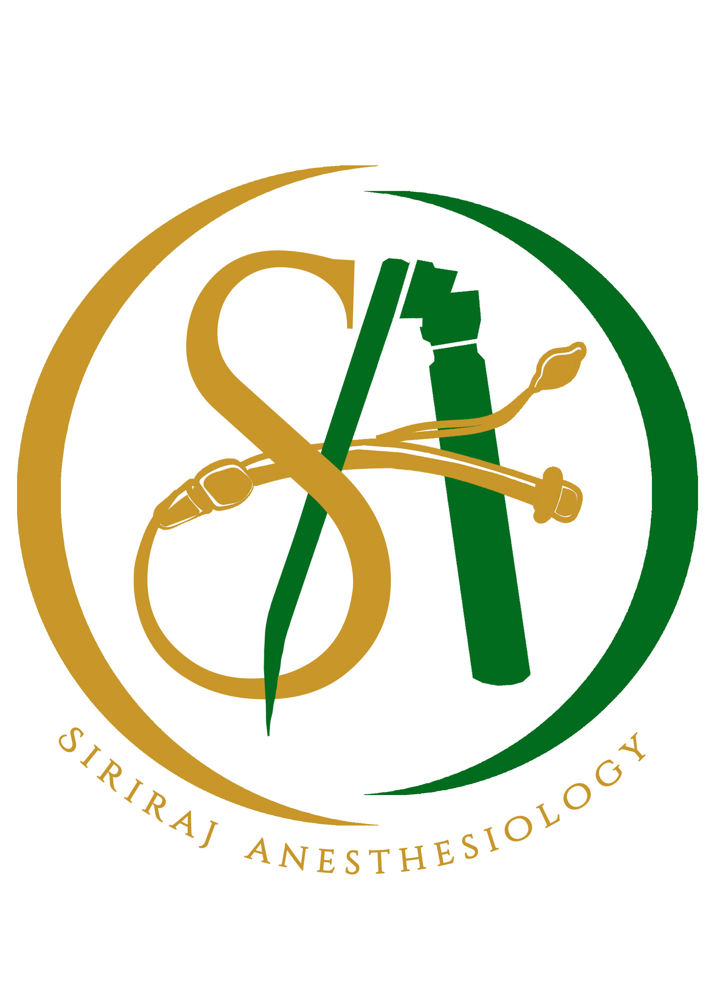

Anesthetics for obese patients
คำนวณขนาดยาสำหรับผู้ป่วย obesity (BMI ≥30)
Gender :
👦🏻 Male
👧🏻 Female
Weight (kg):
Height (cm):
Calculate
Reset
1. Propofol
2. Fentanyl
3. Muscle relaxant
4. Neostigmine
5. Other medications
6. Addition information